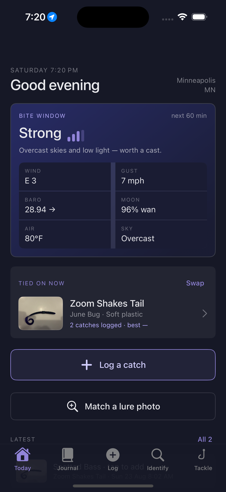

For anglers who track patterns
Know what's working, before you forget why.
B8fish logs a catch in one tap: species, lure, and live conditions, captured while the fish goes back in the water. Build a photo library of your tackle box, and start seeing which lure works, where, and when.
Not yet on the App Store. Currently in field testing.

Tap a tab to see what each screen does.
What it does
Three jobs. Nothing else competing for your attention.
Log a catch in one tap
Camera opens first, because getting the fish back in the water matters more than filling out a form. Species, size, and the lure already tied on. Everything else can wait.
Live conditions, honestly scored
Wind, gust, barometric trend, moon phase and sky pulled from a live weather feed, feeding a bite-window rating built from real angling signals, not a fake number.
A tackle box that remembers
Photograph a lure once (type, brand, model, colour, even a shot of the packaging) and match it by photo forever after. See how many catches it's actually landed, hold to tie it on, and never stare at one again wondering what it is or where to buy another.
Where this is going
Every catch you log is a data point toward a real question.
Fishing forums are full of opinions about what works. B8fish is building toward something better: a dataset that connects the lure to the species, the water, and the exact conditions at the moment of the bite, logged by anglers actually fishing, not guessed after the fact.
The eventual goal is a recommendation you can trust: the right lure for this species, this water, right now, grounded in real catches, not folklore.
Field testing now
Want in when it ships?
B8fish is being field-tested on real water before it goes on the App Store. Leave your email and you'll hear the moment it's live.
No spam, just a heads-up at launch.